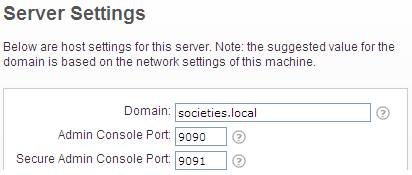
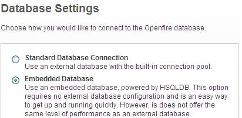
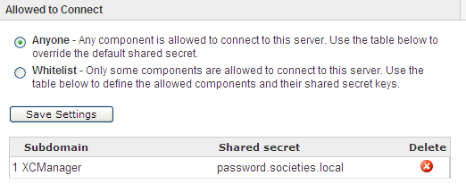

OpenFire Configuration
Start the Openfire Server and select "Launch Admin" to lauch the admin website. The first time you do this you will need to make some config choices. You can select defaults for most screens, but please make the following edits:
- "Server Setup": Domain name defaults to your machine name. Change it to "societies.local" (see figure below)

- "Database Config": Choose "Embedded Database" (see figure below)

When complete, login to the admin website and perform the following changes:
- Under "Users/Groups", select "Create New User" and create a new user account, e.g. alec
- Under "Server" -> "Server Settings" -> "External Components". In the "Service Enabled" box, click the "Enabled" checkbox and enter a "Default shared secret", e.g. "password" and click "Save Settings"
- In the "Allowed to Connect" box, , ensure 'Anyone' is selected.

Click on "Save Settings". Also edit your local hosts file to ensure that your chosen domain name, e.g. "societies.local", maps to 127.0.0.1. Confirm this by pinging societies.local or ict-societies.eu from command prompt. There is a societies openfire plugin that should be deployed. This plugin is necessary to create a openfire accounts via the societies webapp. Install the plugin as follows:
- Copy the societies-openfire-plugin jar into your openfire plugin directory
- Restart openfire